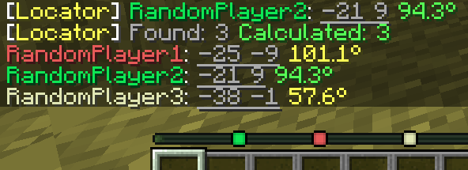

Locator Triangulation


A client-side Fabric mod that allows determining players' coordinates using triangulation.

Quick start
Run
/locator_pos1- Then move away as far as possible so the angle to the target becomes as large as possible, then run
/locator_pos2and/locator_locate <name>or/locator_locate_allto get results for all players
How does this work?
The mod calculates coordinates using publicly available data accessible to regular vanilla players and acts solely as a calculator. If the vanilla locator is disabled on the server or a player has hidden from it, the mod will not be able to determine their coordinates.